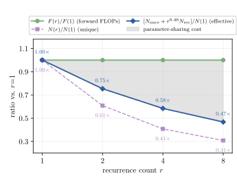
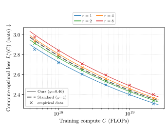
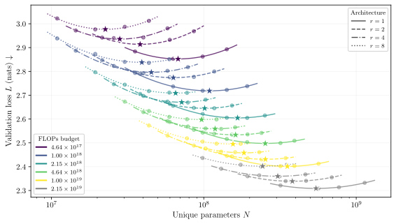
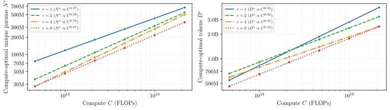
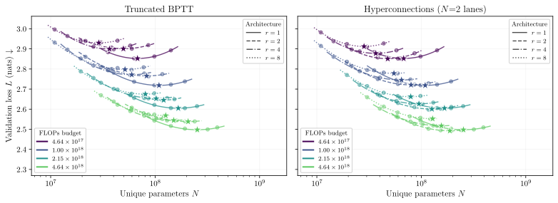
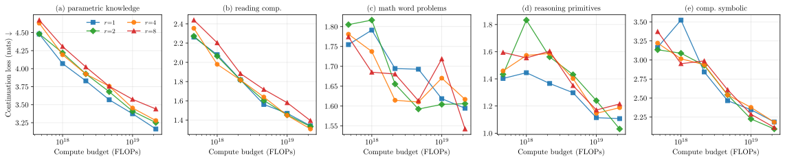

一次循环值多少参数？循环语言模型的等深度扩展律
How Much Is One Recurrence Worth? Iso-Depth Scaling Laws for Looped Language Models
论文目前是 arXiv 预印本，没有公开代码（截至 2026-10-19）。本页依据第 3 版（v3）。阅读状态、进度与收藏只保存在你的浏览器里。
逐节精读
这部分按论文的章节顺序，用本站自己的话把整篇论文从头讲一遍，附录里用得上的内容放到正文相应的位置。读懂某个概念需要的背景知识，会在第一次用到它之前单独讲清楚（青色框）。每个结论都尽量说出“因为什么、所以什么”。论文以 CC BY 4.0 许可发布，所以原图直接放在讲到它的地方，并说明怎么看；原图没画到的概念，用本站的示意图补上。标“推算”的数字是本站根据论文数据算出来的，不是论文原话。每节末尾有英文原文的链接。
0 导读：这篇论文解决什么问题
循环 Transformer（looped transformer，也叫深度循环 Transformer）把同一组层反复使用好几遍：一个 token 经过这组层之后，再回到这组层的入口重新算一遍。这样做的结果是，模型里存储的参数很少，每个 token 实际执行的计算却很多。近两年的 Huginn、Ouro 等循环模型都报告了很亮眼的结果，比如“14 亿参数的循环模型追平 40 亿参数的普通模型”。但这类说法比较的是参数量：循环 4 遍的模型，每个 token 的计算量大约是同参数普通模型的 4 倍。于是一个基本问题一直没有被直接量过：在训练算力相同的条件下，把一个块循环 r 遍，能不能顶替 r 个各不相同的块？顶替不了的话，循环一遍到底值多少个独立的块？
这篇论文用一个干净的对照实验回答这个问题。作者设计了四种模型，循环次数 r 分别是 1（不循环）、2、4、8，但每个 token 都恰好执行 20 层，称为“等深度”（iso-depth）。宽度相同时，这四种模型每个 token 的训练和推理计算量几乎一样，唯一的区别是共享的层越多、独立的参数越少。作者在 6 个算力预算（从 \(4.64\times10^{17}\) 到 \(2.15\times10^{19}\) FLOPs）上一共训练了 116 个模型，然后拟合了一条把循环次数写进去的扩展律，从中读出一个数：循环等效指数 \(\varphi=0.46\)（95% 置信区间 0.41–0.53）。它的意思是，循环 r 遍的效果只相当于 \(r^{0.46}\) 个独立的块，比如循环 4 遍约等于 1.9 个块，而不是 4 个。换成模型大小来说：一个循环 4 遍、独立参数 4.1 亿的模型，验证损失和一个 5.8 亿参数的普通模型相当，训练成本却和一个 10 亿参数的普通模型一样。
论文的第二个贡献是把 \(\varphi\) 当作诊断工具。作者发现，常用的“截断反传”让验证损失下降，却把 \(\varphi\) 拉低到 0.38，说明损失下降来自省下算力多看了数据，循环本身反而训得更差；而“超连接”把 \(\varphi\) 提高到 0.65，是循环机制真的变好了。光看验证损失，分不出这两种情况。
这篇论文对本站这一批循环 Transformer 精读页格外重要：它给出了一个“汇率”，让我们能把别的论文里“参数匹配”的结果，粗略换算成“算力匹配”的视角。但它的实验规模很小（最大的对照实验约 11 亿参数、470 亿 token），也只有一种架构和一种训练配方，这些限制会在相应的地方讲清楚。
读完这部分，你应该能回答这几个问题：
- 循环 Transformer 是什么，为什么在它身上“参数量”和“计算量”分开了？
- Chinchilla 扩展律里的 \(E\)、\(A\)、\(B\)、\(\alpha\)、\(\beta\) 各是什么意思，怎么用它找出给定算力下最好的模型大小？
- 为什么要把有效深度固定在 20 层？固定参数和固定深度，回答的是两个不同的问题。
- \(\varphi\) 怎么定义，等于 0 和等于 1 各意味着什么？410M、580M、1B 这三个数是怎么算出来的？
- 116 次训练是怎么安排的，置信区间 [0.41, 0.53] 是怎么来的，它覆盖了哪些不确定性、没覆盖哪些？
- 截断反传为什么让损失变低、\(\varphi\) 却变小？超连接为什么让 \(\varphi\) 变大？
- 这个结论能外推到几十亿参数、上万亿 token 吗？拿它去读 Ouro、Huginn 的说法，会得到什么？
1 引言：循环 r 遍能不能顶替 r 个独立的块
普通的 Transformer 是一摞层，比如 20 层，每一层都有自己的一套权重。一个 token 从下往上经过这 20 层，每层做一次注意力和一次前馈网络。这时有两个数是绑在一起的：模型存储的参数（20 层的权重加起来），和每个 token 执行的计算（大约是参数量的 2 倍次浮点运算，下文 §3.2 会解释）。参数翻倍，计算也翻倍。
循环 Transformer 把这两者拆开。它让一组层反复执行：同一组权重被用好几遍，每用一遍，计算量就多一份，但存储的参数不变。较早的代表是 2018 年提出的 Universal Transformer；后来有工作证明循环 Transformer 在理论上可以模拟通用计算（Looped Transformers as Programmable Computers），也有工作发现循环带来偏向推理的归纳偏置（Reasoning with Latent Thoughts）。
这篇论文用的是 Huginn 提出的“前奏—循环块—尾声”（prelude–recur–coda）结构：
- 前奏（prelude）：开头几层各不相同的层，把 token 变成内部表示。
- 循环块（recurrent block）：中间一组共享的层，执行 r 遍。
- 尾声（coda）：最后几层各不相同的层，把内部表示变成对下一个 token 的预测。
- 输入注入（input injection）：每一遍循环开始前，把前奏的输出 \(e\) 和当前的状态 \(h\) 拼在一起，经过一个线性变换再送进循环块。可以把它理解成“每想一轮之前，都重新看一眼题目”，防止多轮之后忘掉原始输入。
打个比方：普通模型像一本写满 20 个不同步骤的操作手册；循环模型像一本只写了“开头 2 步、中间 4 步、结尾 2 步”的手册，中间 4 步要求重复做 4 遍。两人花的时间一样（都做 20 步），后一本手册薄得多。这篇论文问的就是：手册变薄之后，到底损失了多少“本事”。
为什么要用循环？最直接的好处是省存储：权重少，显存占用就少，适合内存紧张的场合。另一个被反复提到的好处是，反复迭代同一组层，可能更擅长需要多步推理的任务。但代价也很直接：同样一份参数被用 r 遍，每个参数摊到的计算量变成了 r 倍。如果训练算力是固定的，那么想多循环几遍，就只能让独立的层少一些，否则算力不够。于是共享的那组参数必须“干更多的活”，才值得这笔交换。作者指出，这笔账以前没人直接算过。同期的扩展律工作（Parcae）固定的是独立参数量，循环次数增加时，有效深度、每 token 的推理计算和 KV 缓存都跟着增加，于是“循环一遍值多少参数”这件事无法单独拿出来测。
作者的办法是固定有效深度。四种模型（r = 1、2、4、8）都执行 20 层，下图把它们“展开”画了出来：同名的层是同一份权重。
宽度相同时，四种模型每个 token 的训练和推理计算量相同（只差注入层带来的一点点），每个 token 看到的有效深度也相同，但独立的非嵌入参数随 r 增大最多减少到 1/3.2（r = 8 时只剩 31%）。所以在相同的算力预算下，它们的验证损失差多少，就纯粹是“用共享的层代替独立的层”付出的代价。作者把这个代价称为参数共享成本。为了给每种架构找到算力最优的模型大小，他们在 6 个算力预算上扫描模型宽度，总共训练了 116 个模型。
有了这些数据，就可以拟合扩展律。标准的 Chinchilla 扩展律只用独立参数量 \(N\) 和训练 token 数 \(D\) 描述损失，但它不知道 r 的存在，而且同样是 \(N\) 个参数，循环模型花的计算更多，所以它没法比较不同 r 的模型。作者提出一个联合扩展律，把参数拆成只用一次的部分 \(N_{\text{once}}\)（前奏和尾声）和循环使用的部分 \(N_{\text{rec}}\)（循环块），并引入循环等效指数 \(\varphi\)：
\(\varphi=1\) 表示循环一遍和一组独立的层一样值钱，此时算力相同的循环模型和普通模型损失一样；\(\varphi=0\) 表示多循环几遍完全没用，只是白花计算。实测 \(\varphi=0.46\)，介于两者之间。§3.3 会把这条式子和 410M、580M、1B 的例子从头算一遍。
引言的最后一部分预告了第二个贡献：\(\varphi\) 不是固定的，换一种训练方法或结构，它就会变。作者用 \(\varphi\) 的变化量 \(\Delta\varphi\) 当诊断工具，测了两种做法：截断反传（只对最后几遍循环求梯度，省下约 30% 的训练计算）和超连接（在循环之间加几条并行的残差通道）。两者都降低了验证损失，却把 \(\varphi\) 推向相反的方向，§5 会细讲。


2 相关工作：固定参数，还是固定深度
循环语言模型。在深度方向共享权重的做法始于 Universal Transformer。近来循环模型重新受到关注，主要是因为它被看作一条“在潜空间里推理”、在测试时多花计算换质量的路线：让共享的块多转几圈，每个 token 就能多想一会儿，而参数不增加。Huginn 和 Ouro 已经把这条路线做到约 30 亿参数、万亿 token 量级的规模，下游成绩常常追平大得多的稠密模型。作者强调，这些成绩付出了成比例的训练算力，因为每多循环一遍，前向和反向的计算就多一份。另一类工作在单个算力预算下做算力匹配的比较（例如 Saunshi 等人），得到一个一致的规律：循环模型在验证损失和需要记忆知识的任务上落后，在推理类任务上缩小差距甚至反超。本文把这类比较推广到扩展律的框架里，也就是在很多个预算上同时比较，并用一个共享的 \(\varphi\) 把循环和不循环的模型放进同一条律里。很多改进方法都可能影响 \(\varphi\)：把预训练好的普通模型改造成循环模型、按 token 自适应地决定循环次数（如 Mixture-of-Recursions）、截断反传、超连接。本文只测了后两种。
固定参数的扩展律（Parcae）。同期的 Parcae 在固定独立参数量 \(N\) 的前提下拟合扩展律，动机是让不同架构占用的参数内存相同。在那个设定里，循环次数增加时，深度、每 token 推理计算和 KV 缓存都随之增加。附录 A 还列出了三个让两篇论文不能直接对比的细节：
- Parcae 每一步训练从一个平均值为 \(\mu_{\text{rec}}\) 的分布里随机抽循环次数，本文的 r 是架构里写死的。
- Parcae 用截断反传，训练计算比推理计算省；本文主实验用完整反传，让训练和推理的计算量都和对照的普通模型一致（截断反传另作案例研究，§5.1 会看到它把 \(\varphi\) 拉低）。
- Parcae 的输入注入是对角矩阵（参数量 \(O(d)\)），本文是一个 \(d\times 2d\) 的线性层，有一点计算开销。
Parcae 的等效参数写法是 \(N_{\text{eff}}=\mu_{\text{rec}}N\)，即循环次数乘以全部独立参数（包括前奏和尾声）；本文把参数拆成只用一次的和循环使用的两部分，只让后者乘上 \(r^{\varphi}\)。作者的结论是两条律互补：Parcae 回答“内存预算有限时，循环几遍算力最划算”，本文回答“固定深度时，每一遍循环的共享成本是多少”。同时对齐参数、计算和内存三项的扩展律仍是开放问题；作者提到 Knupp 等人的工作用稀疏 MoE 在不增加计算的前提下补回容量，可以做到这一点。
| 比较方式 | 固定不变 | 随循环次数变化 | 回答的问题 |
|---|---|---|---|
| 给定模型多加循环（Huginn、Ouro 的主结果） | 独立参数 | 每 token 训练与推理计算、有效深度；KV 缓存按常规实现也随之增长（Ouro 论文：4 遍需要 4 份） | 同样的参数内存，多循环能多换多少质量 |
| 固定参数的扩展律（Parcae） | 独立参数 \(N\) | 深度、每 token 推理计算、KV 缓存 | 内存预算有限时，最优的循环次数是多少 |
| 等深度扩展律（本文） | 有效深度 20 层；同宽度下每 token 计算与 KV 缓存 | 独立参数（共享越多越少） | 一遍循环值多少独立参数，即共享成本 |
| 三项对齐的 MoE 比较（SMELT，2026-09） | 每 token 计算、非嵌入总参数、KV 缓存 | 结构本身（用 MoE 专家补回参数） | 预算全部对齐时，循环有没有结构上的优势 |
测试时多算一会儿，能换来多少？附录 A 讨论了循环模型最常被提到的卖点：推理时让共享块多转几圈，不增加参数就能多花计算。作者指出三点。第一，已有的循环语言模型（如 Ouro、MoR）都只用很少的循环次数（r ≤ 4），原因正是每多一遍都要付出大量训练计算，换来的容量却不如独立参数。按 \(\varphi=0.46\)，8 遍循环只值约 2.6 个独立块，远低于它花掉的 8 份计算。所以要想靠多循环来扩展测试时计算，需要的是提高 \(\varphi\)，而不只是加大 r。第二，按 token 自适应地决定循环次数（难的 token 多转、容易的 token 提前退出）在原理上很诱人，但还没有带来实际的墙钟加速：并行预填充和批量解码都假设同一步里所有 token 执行相同的层数，提前退出会打破这一点，还会让某些遍的 KV 缓存缺失。第三，在合成算法题上“少循环训练、多循环推理”的外推效果，没有在一般的语言建模上复现：Parcae 拟合的测试时曲线在循环次数接近训练时的平均值处就饱和了，Ouro 也报告超过训练深度后没有收益。因此作者把 r 当作一个架构上的扩展轴，而不是测试时的扩展轴。
3 方法：架构、计算量的账，以及联合扩展律
3.1 架构：20 层有效深度，前奏 2 层、尾声 2 层
四种循环模型都套用前奏—循环块—尾声的模板，有效深度固定为
其中前奏和尾声各 2 层，剩下的 16 层由循环块分 r 遍完成，所以循环块有 \(\ell_{\text{recur}}=16/r\) 层：r = 2、4、8 时分别是 8、4、2 层。r = 1 就是 20 层各不相同的普通 Transformer。模型宽度写成 \(d_{\text{model}}=64s\)，\(s\) 是一个整数“尺寸系数”，注意力每个头的维度固定为 128。扫描模型大小时只改宽度，不改深度，所以“更大的模型”指的都是更宽的模型。
循环模型每一遍开始前都有一个线性注入层：
这里 \(e\) 是前奏的输出，每一遍都相同；\(h^{(t)}\) 是第 \(t\) 遍时的状态，初始 \(h^{(0)}=e\)；\([\cdot\Vert\cdot]\) 表示把两个向量拼起来。\(W_{\text{inject}}\) 初始化为 \([I\Vert 0]\)，也就是训练开始时只把 \(e\) 原样传进去。附录 C.2 在 \(s=10\)、r = 4、\(10^{18}\) FLOPs 的设置下比较了三种注入方式：完全不注入（直接把上一遍的输出送进下一遍）根本训不起来，验证损失停在 7.400；把 \(e\) 直接加到状态上的“加法注入”不需要参数，省下的计算多换来约 2% 的 token（973M 对 955M），损失仍比线性注入差 0.004（2.797 对 2.793）。所以主实验都用线性注入，它的计算开销计入所有比较。
3.2 计算量的账：参数少了，计算没少
Transformer 的绝大部分计算是矩阵乘法。一个 \(d\times d\) 的权重矩阵作用在一个 token 的向量上，要做 \(d^2\) 次乘法和差不多同样多次加法，也就是约 \(2d^2\) 次浮点运算（FLOPs），而这个矩阵恰好有 \(d^2\) 个参数。所以粗略地说，每个参数对每个 token 贡献 2 次运算，前向一遍约 \(2N\)。反向传播要算两样东西：对输入的梯度和对权重的梯度，每样的计算量和前向差不多，所以反向约 \(4N\)，训练一个 token 合计约 \(6N\)。这是 Kaplan 等人和 Chinchilla 论文通用的估算。
循环模型打破了“参数 = 计算”的对应：循环块的参数每个 token 要用 r 遍，所以它贡献的计算是 \(2r N_{\text{rec}}\)，而不是 \(2N_{\text{rec}}\)。
按论文的记号，宽度为 \(d\) 时一层 Transformer 的参数是 \(n_b=12d^2\)：注意力的四个投影矩阵（Q、K、V、输出）各 \(d^2\)，共 \(4d^2\)；前馈网络先升到 \(4d\) 再降回 \(d\)，两个矩阵共 \(8d^2\)。注入层是一个 \(d\times 2d\) 的矩阵，\(n_i=2d^2\)。于是
r = 1 时是 \(240d^2\)；r = 2、4、8 时是 \(146d^2\)、\(98d^2\)、\(74d^2\)，分别约为普通模型的 61%、41%、31%。以 \(s=10\)（\(d=640\)）为例，论文给出的四个独立参数量是 98.3M、59.8M、40.2M、30.3M。我们可以验算两个：r = 1 时 \(240\times640^2=98.3\)M；r = 8 时 \(74\times640^2=30.3\)M（推算），和论文一致。
再看计算。前奏和尾声各执行一次，循环块执行 r 遍、每遍前面有一次注入，所以每 token 的前向计算是
约等号两边只差 r 遍注入层的计算：相对开销是 \(2r n_i/(2\ell_{\text{eff}}n_b)=r\cdot 2d^2/(20\cdot12d^2)=r/120\)，r = 2、4、8 时分别是 1.7%、3.3%、6.7%。训练计算是前向的 3 倍。因此在同一个算力预算 \(C\) 下，同宽度的四种模型能训练的 token 数 \(D\approx C/F_{\text{train}}\) 几乎相同；论文附录表 6 也注明，循环模型因为注入层的开销，token 数略少一点。
论文实际报告的 FLOPs 还包括两部分和参数无关的计算：注意力里 \(QK^\top\) 和乘 \(V\) 的矩阵乘（训练时每层约 \(12hqT\)，\(h\) 个头、每头 \(q\) 维、序列长 \(T\)），以及把向量映射到词表的输出层（训练时 \(6dV\)，\(V\) 是词表大小）。宽度相同时，这两部分在四种架构里完全一样，所以公式里略去它们不影响比较。但它们在小模型里占比不小。我们用 \(s=10\)、r = 1 验算一下（推算）：参数部分 \(6\times98.3\text{M}=5.90\times10^8\)；注意力部分 \(12\times640\times2048\times20=3.15\times10^8\)；输出层 \(6\times640\times32064=1.23\times10^8\)；合计约 \(1.03\times10^9\) FLOPs/token。\(10^{18}\) FLOPs 的预算除以它，得到约 0.97B token，正好是论文表 6 里这一格的 token 数。这也说明，在这个规模上，注意力和输出层约占总计算的 43%（推算），“\(6N\)”只是参数部分。
一句话总结这一小节：循环模型小得多，因为它每个参数要花多得多的计算。
3.3 联合扩展律：给循环一个“汇率” φ
扩展律描述的是“模型越大、数据越多，损失怎么下降”。DeepMind 的 Chinchilla 论文（Hoffmann 等，2022）用下面的形式拟合了数百次训练：
\(L\) 是验证集上的交叉熵损失，单位 nats（以 \(e\) 为底的对数）；\(N\) 是非嵌入参数量，\(D\) 是训练 token 数。右边三项各有含义：
- \(E\) 是不可约损失。语言本身有不确定性，哪怕模型无限大、数据无限多，也不可能把下一个 token 猜得百分之百准，损失只能逼近 \(E\)。
- \(A N^{-\alpha}\) 是模型有限带来的损失。模型越大，这一项越小；\(\alpha\) 决定它降得多快。
- \(B D^{-\beta}\) 是数据有限带来的损失。看过的 token 越多，这一项越小；\(\beta\) 决定它降得多快。
幂律的意思是“每翻一倍，打一个固定的折扣”。用本文 r = 1 的拟合值（表 1：\(E=1.56\)，\(A=58\)，\(\alpha=0.251\)，\(B=150\)，\(\beta=0.267\)）算一个例子（推算）：
- \(s=10\) 的模型，\(N=98.3\)M，在 \(10^{18}\) FLOPs 预算下训练 \(D=0.97\)B token。参数项 \(58\times(9.83\times10^7)^{-0.251}=0.572\)，数据项 \(150\times(9.7\times10^8)^{-0.267}=0.598\)，总损失 \(1.56+0.572+0.598=2.730\) nats。
- 只把参数翻倍，参数项乘以 \(2^{-0.251}=0.840\)，从 0.572 降到 0.481，损失少 0.09；只把数据翻倍，数据项乘以 \(2^{-0.267}=0.831\)，从 0.598 降到 0.497，损失少 0.10。
麻烦在于算力是有限的。训练算力约等于“每 token 计算 × token 数”，所以算力固定时，模型越大，能看的 token 就越少：参数项下降的同时数据项上升。把同一个算力预算下不同大小的模型画出来，损失会呈 U 形，这条曲线叫等算力曲线（IsoFLOP curve），U 形的最低点就是这个预算下算力最优的模型大小。下图用 r = 1 的拟合值，在 \(10^{18}\) FLOPs 下把两项拆开画出来。
Chinchilla 律里 \(\alpha\) 和 \(\beta\) 的相对大小决定了算力翻倍时，多出来的算力应该怎么分给“更大的模型”和“更多的数据”。不过作者提醒，\(A\) 和 \(B\) 这两个系数在等算力实验里只能被粗略确定（所以论文只保留两位有效数字）。原因是：在一条等算力曲线上，\(N\) 变大时 \(D\) 必然变小，两者总是绑在一起变化，拟合时“系数 \(A\) 大一点、指数 \(\alpha\) 也大一点”和“两者都小一点”可以得到差不多的曲线，数据分不清。这一点 Besiroglu 等人在复现 Chinchilla 时也讨论过。
标准形式为什么不够用。把 Chinchilla 律直接套到循环模型上有两个问题：公式里没有 r；而且同样 \(N\) 个参数，循环模型每个 token 花的计算更多，“参数”在两种模型里的含义不同。在本文的等算力设计里，同宽度的四种模型 \(D\) 几乎相同而 \(N\) 越来越小，相当于同样多的数据分摊给越来越少的参数。
作者的扩展是让循环块的参数乘上一个放大系数 \(r^{\varphi}\)：
括号里的量叫等效参数量 \(N_{\text{eff}}\equiv N_{\text{once}}+r^{\varphi}N_{\text{rec}}\)。它的直观含义是：一个有 \(N_{\text{eff}}\) 个参数的普通模型，用同样多的 token 训练，损失和这个循环模型一样。注意这里对齐的是 token 数 \(D\)，不是算力；算力对比要再结合 §3.2 的计算量。这条律只在等算力的实验上拟合，算力 \(C\) 不出现在公式里，只是通过 \(D\) 间接起作用。
\(\varphi\) 有两个自然的参照点：
- \(\varphi=0\)：\(r^0=1\)，循环块不管跑 1 遍还是 r 遍，贡献都一样。多出来的 \(r-1\) 遍只花计算、不增加能力；在固定算力下增大 r 只会让独立参数变少、损失变高。
- \(\varphi=1\)：\(r^1=r\)，循环块的每一遍都和一组独立的层一样值钱。这时 \(N_{\text{eff}}=N_{\text{once}}+rN_{\text{rec}}\)，正好等于同宽度普通模型的参数量（再加一点注入层），四种架构在相同算力下应该一模一样。
- \(0<\varphi<1\)：部分找回。\(\varphi>1\) 意味着循环比独立的层还值钱，那样 r = 8 应该比 r = 4 更好，实验里没有观察到。
为什么 \(\varphi<1\) 就意味着在算力匹配时循环会输？因为循环块的计算随 r 线性增长（每多一遍多一份），而它的能力只按 \(r^{\varphi}\) 增长，比线性慢。花出去的计算越来越多，换回来的能力越来越少，所以每单位算力的能力随 r 下降。从上图还能读出边际收益递减（推算）：从 1 遍加到 2 遍，多出 0.38 个块；从 2 遍到 4 遍，多出 0.52 个块，平均每遍 0.26；从 4 遍到 8 遍，多出 0.71 个块，平均每遍只有 0.18。
把 410M、580M、1B 这组数字从头算一遍。论文附录 F.4 的推导只用到比例，和模型绝对大小无关，所以可以从任何一个参照模型出发。
- 选一个普通模型。取 r = 1、独立参数 \(N(1)=1\)B 的模型，宽度为 \(d\)，20 层，每层 \(n_b\) 个参数，所以 \(20n_b=1\)B。
- 同宽度的 r = 4 模型有多少独立参数。它有前奏 2 层、尾声 2 层、循环块 4 层，共 8 层不同的层，再加一个注入层（\(n_i=2d^2=n_b/6\)）。不算注入层时比例是 \(8/20=0.40\)；算上注入层是 \((8+1/6)/20\approx0.41\)，所以约 410M。
- 它的等效参数是多少。\(N_{\text{once}}=4n_b\)，\(N_{\text{rec}}=4n_b\)（略去注入层），等效参数比例是 \((4+4^{0.46}\times4)/20=(4+1.89\times4)/20=(4+7.57)/20\approx0.58\)，所以约 580M。也就是说，这个循环模型用和普通模型一样多的 token 训练，损失和一个 580M 的普通模型相当。（把注入层也算进 \(N_{\text{rec}}\)，比例是 0.59，推算。）
- 它的训练成本是多少。每个 token 的训练计算只取决于执行了多少层。宽度相同、都执行 20 层，所以它和 1B 的普通模型每 token 计算一样，只多出 3.3% 的注入层开销。于是训练成本相当于一个 1B 的普通模型。
换个角度说（推算）：要达到同样的损失，一个 580M 的普通模型每 token 只需要大约 \(0.58/1.03\approx56\%\) 的训练计算；反过来，这个循环模型为同一个损失多付了约 1.8 倍的训练计算。它换来的是权重内存只有 41%。推理时它每个 token 的计算量也和 1B 普通模型一样；而且因为同样执行 20 层，KV 缓存的大小也和 1B 普通模型相同（论文在附录 A 对比 Parcae 时指出，本文设定下 KV 缓存不随 r 变化）。所以 \(\varphi\) 描述的是一笔明确的交易：用计算换内存，汇率由 \(\varphi\) 决定。
- “\(\varphi=0.46\)”不是说“每一遍循环值 0.46 个块”。它是一个指数：r 遍合起来值 \(r^{0.46}\) 个块。r = 4 时是 1.89 个块，占“完全等价”（4 个块）的 47%；r = 8 时是 2.60 个块，只占 33%（推算）。
- “410M 循环模型相当于 580M 普通模型”指的是同样 token 数下验证损失相当，不是说在所有下游任务上都一样。§6 会看到，需要记忆知识的任务确实跟着验证损失走，而推理类任务在这个规模上看不出差别。
- 这个换算对“等深度、前奏 2 层 + 尾声 2 层、完整反传、线性注入”这一套配方成立。§5 会看到换一种训练方法，\(\varphi\) 就能从 0.38 变到 0.65。
4 实验：116 次训练拟合出的等深度扩展律
4.1 实验设置：同一套代码、同一份数据流、同一组超参数
实现。代码基于 Karpathy 的 nanochat：解码器结构的 Transformer，使用 RMSNorm、旋转位置编码（RoPE）、对 Q 和 K 做归一化、平方 ReLU 激活的前馈网络，注意力用 FlashAttention-2 和 -3。序列长度 2048，输入和输出的词嵌入不共享，输出 logits 用 \(15\tanh(\cdot/15)\) 做软截断。实验在 A100-80GB 和 H100-80GB 上进行，整个项目（含探索性配置和失败的运行）约用了 5,000 GPU 小时。
数据。训练数据是 FineWeb-Edu（一个经过教育质量筛选的网页文本集）的子集，用 Llama 2 的分词器（32,000 个基础词，补齐到 32,064 以对齐张量核心）切分，并事先打包成长度 2,049 的固定序列（多出的 1 个 token 用来给第 2,048 个位置提供预测目标）。这样四种架构看到的是完全相同的数据流。验证损失在同样打包的 FineWeb-Edu 留出集上计算，单位 nats。
比较两种架构时，一个常见的陷阱是：超参数（尤其是学习率）是为其中一种调的，另一种用了不合适的学习率，于是“架构差”其实是“没调好”。在这篇论文里，这个陷阱会直接污染 \(\varphi\)，因为 \(\varphi\) 正是用 r = 1 当基准来标定的。
作者用了两层保护。第一，用 \(\mu\)P 和 HyperP 这类“参数化”方法，让最优学习率在改变宽度、批大小和训练时长时可以直接迁移，不必在每个规模上重新调。第二，在参照配置上分别为循环和不循环的模型扫描学习率，确认两者的最优值一致。
优化。矩阵参数用 MuonH 优化（Muon 优化器的一个变体，把权重约束在固定范数的球面上，所以权重衰减不起作用，设为 0）；嵌入、输出层和归一化层的参数用 AdamW。所有运行的基础学习率相同：MuonH 0.014；AdamW 嵌入 0.3、输出层 0.004、归一化 0.005；都线性衰减到峰值的 10%。批大小 262,144 个 token。附录 D 在 \(s=10\)、每参数 10 个 token（约 10 亿 token）的设置下，为 r = 4 和 r = 1 各扫了 8 个学习率（0.008 到 0.024），两者的最优点都在约 0.014。再把宽度换成 \(s\in\{8,10,14\}\)、把数据量换成每参数 10、20、40 个 token，用 0.014 带来的损失“后悔值”（比该条件下最优学习率高出的损失）都不超过 0.005 nats。
4.2 每种架构单独拟合：曲线整体上移，最优点更宽
实验网格是 6 个算力预算 \(C\in\{4.64\times10^{17},\,10^{18},\,2.15\times10^{18},\,4.64\times10^{18},\,10^{19},\,2.15\times10^{19}\}\) FLOPs，相邻两个预算差约 2.15 倍，最大和最小差约 46 倍（论文称“约 50 倍”）。每个预算下扫描若干宽度（\(s\) 从 6 到 34，即 \(d\) 从 384 到 2,176），每种架构 29 次运行，四种合计 116 次。按附录表 6，独立非嵌入参数从约 1,100 万（\(s=6\)、r = 8）到约 11 亿（\(s=34\)、r = 1），r = 1 的单次训练 token 数从 0.34B 到 7.78B。

在固定算力下，四种架构都画出一条在 \(\log N\) 上近似抛物线的等算力曲线。循环次数越多，抛物线整体越往上移、底部越平，而且循环模型的最优点出现在更宽的宽度上（尽管它们的独立参数仍然更少）。为什么会更宽？在同一宽度下，循环模型的等效参数比普通模型少（\(\varphi<1\) 时 \(N_{\text{eff}}<N(1)\)），也就是“同样的计算买到的能力少”。最优点于是用加宽来补偿，而加宽会提高每 token 的计算，固定算力下能看的 token 就变少了。
作者用 Hoffmann 等人的方法为每种架构单独拟合 Chinchilla 律：在对数空间里，最小化预测损失和实测损失之差的 Huber 损失（\(\delta=10^{-3}\)）：
这里 \(a=\log A\)、\(b=\log B\)、\(e=\log E\)，LSE 是 log-sum-exp，\(\operatorname{LSE}(x,y,z)=\log(e^x+e^y+e^z)\)，所以 LSE 那一项正好等于 \(\log(AN^{-\alpha}+BD^{-\beta}+E)\)，也就是扩展律在对数下的预测值。在对数空间里拟合，等于让各个规模上的相对误差同等重要；Huber 损失在误差小时像平方误差，误差大时像绝对值误差，对个别异常点不那么敏感。目标函数不是凸的，所以作者从 500 个随机起点出发跑 L-BFGS-B，取最好的结果。四个拟合的 \(R^2\) 都超过 0.997（表 1）。
| 架构 | A | α | B | β | E | R² |
|---|---|---|---|---|---|---|
| r = 1 | 58 | 0.251 | 150 | 0.267 | 1.56 | 0.9979 |
| r = 2 | 33 | 0.216 | 910 | 0.365 | 1.60 | 0.9983 |
| r = 4 | 23 | 0.191 | 1300 | 0.388 | 1.56 | 0.9976 |
| r = 8 | 41 | 0.235 | 780 | 0.362 | 1.69 | 0.9980 |
上表是论文表 1（\(A\)、\(B\) 只保留两位有效数字，原因见 §3.3）。作者提醒，这些指数不能直接跨架构比较：一是“独立参数”在循环模型里的含义不同（循环块的每个参数被用 r 次）；二是等算力采样让每种架构落在 \((N,D)\) 平面的不同区域，\(\alpha\)、\(\beta\) 在各自区域里都不太确定。能直接比较的是由各自的律推出的算力最优前沿：在每个预算下对 \(N\) 求最小损失（token 数由该架构在 \(N\) 处的实际每 token 计算决定），得到最优损失 \(L_r^*(C)\)、最优参数 \(N^*(C)\) 和最优 token 数 \(D^*(C)\)。

差距有多大，会不会消失。在全部六个预算上，循环模型的最优损失都落后于普通模型：r = 2 落后 0.03–0.06 nats，r = 4 落后 0.05–0.08，r = 8 落后 0.09–0.12，而且 r 越大差距越大。差距在小预算时更大，随预算增大而收窄，在最大的两个预算之间几乎不再变化（\(10^{19}\) 到 \(2.15\times10^{19}\) 只变了约 0.006 nats）。也就是说，至少在这个范围里，看不出“规模一大差距就自己消失”的迹象。
验证损失是平均每个 token 的负对数似然。两个模型的损失差 \(\Delta L\) nats，意味着它们的困惑度（大致可以理解为“模型平均在几个候选里犹豫”）之比是 \(e^{\Delta L}\)。0.06 nats 对应困惑度高约 6%。这个差距单看不大，但扩展律里损失下降得很慢：从原文图 1 右图粗读，r = 1 的最优损失每当算力增加约 2.15 倍，只下降约 0.1 nats。所以 0.05–0.08 nats 的差距不是小数目，大致相当于普通模型多花不少算力才能换来的进步。§3.3 那个“花 1B 的钱、得 580M 的效果”的换算，就是把同一件事换成了算力的说法。
外推实验。为了检验差距在网格之外是否还在，作者在 \(s=34\)（\(d=2{,}176\)）上训练了一对 r = 1 和 r = 4 的模型，各用 470 亿 token，约 \(4\times10^{20}\) FLOPs，是网格最大预算的约 20 倍；除了把批大小提到 524,288 个 token 外，超参数和网格一致。结果 r = 4 的验证损失是 2.108，r = 1 是 2.047，落后 0.061 nats，正好落在网格上测得的 r = 4 区间 [0.05, 0.08] 里。这对模型是按相同 token 数训练的，不是相同 FLOPs，所以有两个方向相反的偏差：循环模型因为注入层多用了约 3% 的训练计算，占了一点便宜；另一方面，循环模型的最优宽度本来就更宽，\(s=34\) 离 r = 4 的最优点比离 r = 1 的更远，循环模型又吃了一点亏。作者在附录 I 认为总体上这是对算力匹配差距的保守估计。顺带一提，r = 4 的这次训练墙钟时间更短，因为独立参数少。
4.3 联合拟合：φ = 0.46，置信区间 [0.41, 0.53]
接下来用全部 116 次运行拟合 §3.3 的联合扩展律。这把四个各自独立的拟合（共 20 个参数）压缩成一条共享的律，只有 6 个参数：\(A,\alpha,B,\beta,E,\varphi\)，目标函数和上面相同。\(\varphi\) 的作用是把四种架构放到同一个 \((N_{\text{once}}+r^{\varphi}N_{\text{rec}},\,D)\) 曲面上。
| 形式 | α | β | E | φ | R² |
|---|---|---|---|---|---|
| 联合律，φ 自由拟合 | 0.199 | 0.369 | 1.57 | 0.459 [0.41, 0.53] | 0.9972 |
| 固定 φ = 0（纯共享成本） | 0.227 | 0.390 | 1.71 | 0.00 | 0.9858 |
| 固定 φ = 1（与普通模型完全等价） | 0.218 | 0.410 | 1.66 | 1.00 | 0.9552 |
上表是论文表 2（\(A\)、\(B\) 没有列出，理由同上）。\(\varphi\) 的点估计是 0.459，远低于 1，又明显高于 0。作者对这个数的解读把两件事连了起来。一方面 \(\varphi>0\)：每多一遍循环，循环块的能力确实增加了，同样的 \(N\) 需要更少的 token 就能达到同样的损失，所以最优点可以少花一些算力在数据上、多花一些在加宽模型上，这和图 3 的现象一致。另一方面 \(\varphi<1\)：能力按 \(r^{0.46}\) 增长，跟不上计算按 r 线性增长，所以每单位算力的能力随 r 下降，循环模型的最优前沿落在普通模型后面。
\(R^2\) 的差别为什么重要。三行的 \(R^2\) 看上去都很高，这是因为损失的大部分变化来自算力预算这一个方向（从约 3.0 降到约 2.3 nats），不同架构之间只差约 0.1 nats。任何一条能抓住“预算越大损失越低”的律都能拿到很高的 \(R^2\)。所以要看没被解释的部分 \(1-R^2\)（推算）：自由拟合是 0.0028；固定 \(\varphi=0\) 是 0.0142，大约 5 倍；固定 \(\varphi=1\) 是 0.0448，大约 16 倍。换句话说，“循环完全没用”比“循环和独立层一样好”更接近数据，但两者都明显不如 \(\varphi=0.46\)。原文图 1 右图里那条对不上任何点的虚线，就是 \(\varphi=1\) 的样子。
拟合出一个 \(\varphi=0.459\) 之后，我们想知道：如果实验重做一遍，这个数会在多大范围里波动？自助法（bootstrap）的做法是：把手里的数据当作总体，从中有放回地重新抽一份同样大小的样本（有的数据点被抽到两次，有的一次没抽到），在这份样本上重新拟合，得到一个新的 \(\varphi\)；重复几百次，看这些 \(\varphi\) 的分布，取中间 95% 的范围作为置信区间。
这里有个细节。116 次运行并不是 116 个互相独立的数据点：同一个预算、同一个 r 下的几个不同宽度，共同决定了一条抛物线，它们是“一组”。如果把单次运行当作独立的点来抽，会低估不确定性。所以作者用块自助法：把每个（预算，架构）组合当作一块，一共 6 × 4 = 24 块，按块来抽。
稳健性检查。除了置信区间，作者还做了三项检查。第一，联合拟合的残差（实测减预测）按架构拆开看，均值分别是 −0.001、+0.004、−0.006、+0.001 nats（r = 1、2、4、8），均方根误差 0.009–0.011 nats，最大的单点残差 0.036 nats；没有哪一种架构独自吸收了大部分误差，说明一个共享的 \(\varphi\) 对四种架构拟合得差不多好。第二，只用低预算的一半（\(C\le2.15\times10^{18}\)，56 次运行）拟合得到 \(\varphi=0.44\)，只用高预算的一半（\(C\ge4.64\times10^{18}\)，60 次运行）得到 0.49，都在置信区间里。第三，每种架构单独拟合 Chinchilla 律时，预测损失和实测损失的最大偏差小于 0.007 nats，残差对 \(N\) 和 \(D\) 都没有系统性的趋势。
4.4 结果的份量
本站对这组结果能说明多少的整理，依据是论文本身和截至 2026-10-19 能查到的公开信息。
- 规模。网格里的独立非嵌入参数约 1,100 万到 11 亿，单次训练最多约 78 亿 token；唯一的外推实验是一对 \(s=34\) 的模型（r = 1 约 11.4 亿、r = 4 约 4.6 亿独立参数），470 亿 token。作为对照，Huginn 训练了 8,000 亿 token，Ouro 是 7.7 万亿 token，分别是外推实验的约 17 倍和 160 倍（推算）。
- 对齐了什么。同宽度下的每 token 训练与推理计算（只差注入层的 1.7%–6.7%）、有效深度、KV 缓存、完全相同的数据流、同一组经过验证的超参数，以及每个点的总训练算力。没有对齐的是独立参数，这是设计本身：本文测的正是参数共享的代价。“410M ≈ 580M”是 token 数对齐下的损失等价；“训练成本同 1B”是宽度对齐下的计算等价。
- 基线。对照组 r = 1 是作者在同一套代码、同一配方下自己训练的，不存在复现别人模型时的偏差；但这也意味着只有一套配方（nanochat、MuonH、FineWeb-Edu），换配方后 \(\varphi\) 会变（§5），作者也明确说用不同基线测出的 \(\varphi\) 不能互相比较。
- 评测。主要指标是验证损失。下游评测（§6、附录 H）用续写损失而不是准确率，推理类任务在这个规模上分辨不出架构差异，所以“\(\varphi\) 和推理能力的关系”在本文中是未经检验的。
- 独立复现与批评。论文没有公开代码；截至 2026-10-19，本站没有找到独立复现。之后的 SMELT（2026-09）引用了本文，并提出一个批评：固定计算量会同时减少循环模型的独立参数，所以本文测到的落后，可能反映的是“参数变少”，而不是循环本身有缺陷（见“后来怎么样了”）。
- 外推到几十亿参数需要哪些假设。(1) \(\varphi\) 不随规模变化：网格内两半的 0.44 和 0.49 以及 20 倍算力的外推点都支持这一点，但跨度只有约三个数量级的算力；(2) \(r^{\varphi}\) 的形式在 r = 8 以外仍然成立：作者自己说它只是“饱和之前的局部近似”，没有包含架构上限，而等深度设计本身就把 r 限制在 16 以内；(3) 架构模板相同：前奏 2 层、尾声 2 层、有效深度 20；(4) 训练配方相同：完整反传、线性注入；(5) 验证损失上的“能力”能代表下游能力。拿 \(\varphi=0.46\) 去推算别的模型时，这五条通常至少有一两条不成立。
英文原文 §4 ↗ · 附录 D（超参数）↗ · 附录 E（网格）↗ · 附录 F（拟合诊断）↗ · 附录 I（外推实验）↗
5 案例研究：截断反传和超连接，损失都降了，φ 却反向移动
实验设计。每个案例研究都在较低的四个预算（\(4.64\times10^{17}\) 到 \(4.64\times10^{18}\) FLOPs）上重跑 r = 2、4、8 的等算力网格，r = 1 的运行没有循环、不受影响，直接复用当基准，然后重新拟合联合律。为了公平，基线也只用这四个预算重新拟合一次，得到 \(\varphi=0.453\)（和全网格的 0.459 很接近）。
| 变体 | α | β | E | φ | R² |
|---|---|---|---|---|---|
| 基线（完整反传，线性注入；只用低四个预算） | 0.266 | 0.457 | 1.85 | 0.453 | 0.9959 |
| 截断反传（含 r = 2） | 0.255 | 0.484 | 1.87 | 0.380 | 0.9827 |
| 截断反传（不含 r = 2） | 0.265 | 0.492 | 1.89 | 0.373 | 0.9958 |
| 超连接 | 0.308 | 0.464 | 1.93 | 0.646 | 0.9900 |
上表是论文表 3。注意这里的 \(E\) 比表 2 大（1.85 对 1.57）。本站的理解是，只用低预算的数据时，不可约损失和其他系数之间不好区分；所以比较时只看同一张表里的 \(\varphi\)。
5.1 截断反传：省下的算力换成了更多 token，循环本身却变弱了
循环模型的同一份权重在一次前向里被用了 r 遍。求梯度时，要把损失对这份权重的梯度在每一遍上都算出来，再加起来。这和训练循环神经网络（RNN）时“沿时间展开再反传”是同一回事，所以叫通过时间的反向传播（BPTT）。它的代价是反向计算和要保存的中间结果都随 r 增长。
截断反传（truncated BPTT）只对最后 \(r_{\text{bwd}}\) 遍做反向传播：前面几遍照常做前向，但它们的输出状态被“切断”（detach），梯度不会再往前传。前面这几遍于是省掉了反向计算（反向约是前向的 2 倍），也不用保存激活值。Huginn（只反传最后 8 遍）、把普通模型改造成循环模型的工作，以及 Parcae 都用了它。
作者按 Parcae 的设置取 \(r_{\text{bwd}}=\lceil r/2\rceil\)，即 r = 2、4、8 时只反传最后 1、2、4 遍。按附录 G.1 的公式，每 token 的训练计算变成
被截断的遍只付前向的 2 倍参数量，参与反传的遍付 6 倍。以 r = 4 为例算一下参数部分（推算）：循环块加注入层每遍 \(50d^2\)，完整反传时总共 \(6\times(48+4\times50)d^2=1488d^2\)；截断后是 \((2\times2+6\times2)\times50d^2+6\times48d^2=1088d^2\)，少了约 27%。论文说在这个分区下每 token 训练计算约少 30%，省下的算力在固定预算下全部换成更多 token：各网格点上截断版和完整版的 token 数之比，中位数是 1.315。

结果。截断反传让所有运行的验证损失都明显下降，乍一看是个好方法。但 \(\varphi\) 给出了相反的判断：从 0.453 降到 0.380。也就是说，每一遍循环折合的独立参数比以前少了：要达到同样的 \(N_{\text{eff}}\)，现在需要更大的 \(N_{\text{rec}}\)。作者的解释是，前面几遍循环得不到准确的学习信号。最直接的证据来自 r = 2：它只反传最后 1 遍，共享的循环块只从第二遍拿到直接梯度；第一遍仍然在前向里运行、决定了第二遍的输入，但这种间接信号显然太弱，不足以把“循环”这件事训好。所以 r = 2 在联合拟合里残差最大，联合律系统性地低估了它的损失。同样的问题也出现在 r = 4 和 r = 8 里只做前向的那几遍。为了排除“\(\varphi\) 下降只是 r = 2 一家拖累的”，作者去掉 r = 2 重新拟合：\(R^2\) 从 0.983 升到 0.996，\(\varphi\) 仍是 0.373，几乎不变。所以能力下降是所有循环架构共同的现象。
那么损失为什么还是降了？联合律把账算得很清楚：截断省下的算力换来了约 31.5% 更多的 token，同时算力最优的模型变得更宽（附录 G.3），这两样弥补了每遍循环能力的损失还有余。代价是更宽的模型每个 token 的推理计算更高。也就是说，截断反传是在用推理成本换训练成本，循环机制本身并没有变好。
5.2 超连接：循环机制本身变强了
普通 Transformer 的每一层都把自己的输出加回到一条“残差流”上：\(x\leftarrow x+f(x)\)。所有层共用这一条流，信息靠它从底层传到顶层。超连接（hyper-connections，Zhu 等，ICLR 2025）把这一条流扩成 K 条并行的流（车道），并给每一层配几个可学习的系数：从哪几条车道、按什么比例读出这一层的输入；把这一层的输出按什么比例写回各条车道；车道之间怎么互相混合。这样网络可以自己学会“这一步该多大程度保留旧状态、多大程度采用新结果”。它原本是用在相邻的层之间的。
本文把超连接只用在循环的边界上，替换掉线性注入层，用 K = 2 条车道和完整反传。具体地，两条车道一开始都等于前奏的输出 \(e\)；第 \(i\) 遍时（附录 G.1 公式 7）
\(\ell^{(i)}\) 是两条车道的状态（\(K\times d\)），\(\alpha_i\in\mathbb{R}^K\) 决定怎么从车道读出循环块的输入，\(\beta_i\in\mathbb{R}^K\) 决定把循环块的输出按什么比例写回每条车道，\(M_i\in\mathbb{R}^{K\times K}\) 决定车道之间怎么混合。每一遍都有自己的一组系数，总共 \(r(K^2+2K)\) 个标量，K = 2、r = 4 时只有 32 个。初始化选得让训练第一步和普通循环完全一样（\(\alpha_i\) 轮流选一条车道、\(M_i=I\)、\(\beta_i=1\)）。最后两条车道相加交给尾声。混合操作的计算量是 \(6r(K^2+2K)d\)，比它替换掉的线性注入层小两个数量级，可以忽略。
结果。超连接让所有循环模型的验证损失都明显下降，\(\varphi\) 从 0.453 跳到 0.646，每一遍循环值的独立参数多了很多。按 §3.3 的算法，r = 4 时循环块折合 \(4^{0.646}\approx2.45\) 个块，而基线只有约 1.9 个（推算）。有意思的是，r = 2 的模型在某些预算上已经追平甚至超过了 r = 1。但作者提醒，\(\varphi=1\) 要求四种架构全部落在同一条最优前沿上，而不只是 r = 2 在几个预算上赢过 r = 1。附录 C.2 的单点消融给出了同样的方向：在 \(s=10\)、r = 4、\(10^{18}\) FLOPs 下，超连接的验证损失是 2.757，线性注入是 2.793（超连接省掉了注入层的计算，所以多看了约 2% 的 token，973M 对 955M）。
和截断反传相反，超连接让算力最优的模型变得更窄，每 token 的推理计算更低。所以作者认为这是一个真正的结构改进。不过这里有一个需要说明的不对称：超连接最初是为普通 Transformer 的层与层之间设计的，原则上也可以加到 r = 1 的基线上，而本文只在循环模型的循环边界上用了它。如果给 r = 1 也加上同类改进，基线会变强，\(\varphi\) 的标定会往下移。作者认为影响有限，理由是同期工作 Hyperloop Transformers（arXiv 2604.21254）发现，加在循环边界上的超连接比加在层与层之间的效果更好；而且本文的主要用途是在循环模型之间做比较，普通模型只是一个标定用的锚点。超连接这一组拟合的 \(R^2\) 是 0.990，比主实验低，作者归因于运行次数更少（83 次对 116 次）、算力跨度更窄（六个预算里的四个），残差没有看出某个架构特有的规律。
5.3 Δφ 为什么能预言最优宽度往哪边移
附录 G.3 把这个现象写成了一个简单的推导。固定 r 时，把联合律改写成只含独立参数 \(N\) 的形式：
这和普通的 Chinchilla 律形式完全一样，只是参数项的系数从 \(A\) 变成了 \(A_{\text{eff}}=A\,g_r^{-\alpha}\)。在 Chinchilla 律里，参数项的系数越小，说明“模型有限”造成的损失越不要紧，算力最优点就越倾向于用小一点的模型、多一点的数据。于是：\(\varphi\) 变大 → r > 1 时 \(g_r\) 变大 → \(A_{\text{eff}}\) 变小 → 最优宽度变窄、token 变多、推理更便宜；\(\varphi\) 变小则全部反过来。作者在同一个架构族里两个方向都观察到了（图 4 中星号的移动），这说明联合律不只是拟合得好，还能用来预测预算该怎么分配。
- “截断反传让 \(\varphi\) 变小”不等于“截断反传没用”。在训练预算固定、不在乎推理成本时，它确实给出了更低的验证损失。\(\varphi\) 指出的是：这份收益来自多看数据，并且要付出更高的推理成本。
- \(\Delta\varphi\) 只有在同一个 r = 1 基线下才有意义。论文明确说，用不同基线测出的 \(\varphi\) 不能比较；所以拿本文的 0.46 和别的论文里用另一套配方测出的 \(\varphi\) 直接比大小，是不成立的。
- 超连接的 0.65 是在“只给循环模型加超连接”的条件下测的，r = 1 基线没有同等加强，所以这个数可能偏乐观，作者自己也承认标定会往下移。
6 讨论、局限与结论
一遍循环值多少。\(\varphi=0.46\) 意味着 r = 4 时共享块找回了 \(4^{0.46}\approx1.89\) 个独立块的能力，约是完全等价的 47%。所以对引言的问题，作者的回答是：在这套配方下，不能。但他们也强调，\(\varphi\) 不是“循环”这件事本身的属性，而是架构、优化器和训练配方共同作用的结果，§5 已经说明两种改动就能让它大幅移动。
6.1 下游评测：知识跟着损失走，推理看不出差别
附录 H 把下游任务按“考的是什么能力”分成五组：参数化知识（闭卷问答，答案只能来自权重：TriviaQA、NaturalQuestions、WebQuestions）、阅读理解（答案在给定的文章里：LAMBADA、TydiQA-GoldP、SQuADv2、DROP、CoQA）、数学应用题（SVAMP、ASDiv、MAWPS）、推理基本功（作者自建的归纳头探针，以及仿照 Saunshi 等人重新实现的变量赋值题）、组合式符号任务（BigBench 的 Dyck 括号匹配、QA-Wikidata、CS-algorithms，以及 ARC-Easy）。
这些模型很小，很多任务的准确率贴着随机猜的水平，只有 0 和 1 两种结果的准确率非常嘈杂。作者按 Heineman 等人的建议，改用续写损失：把正确答案接在题目后面，看模型给这段正确答案打的平均负对数似然，越低越好。它是连续的，能分辨出准确率还看不出的进步。附录 H.5 显示，在全部检查点上，续写损失与验证损失的皮尔逊相关系数是 +0.983，准确率是 −0.939（符号相反是因为准确率越高越好），而且准确率在小规模时几乎是平的、噪声更大。

五组任务分成三种情况。参数化知识跟着验证损失走：闭卷问答靠的是权重里存的知识，受容量限制，r = 1 在每个预算上都领先，差距随 r 单调增大，r = 8 时达到 0.28 nats。这和 \(\varphi=0.46\) 的预测一致：循环越多，独立参数越少，能存的知识越少。阅读理解和组合式符号任务缩小了差距：阅读理解上 r = 2、4 和 r = 1 持平，只有 r = 8 落后 0.05–0.18 nats；组合式符号任务的汇总在各个预算上大致打平，具体到单项则各有胜负（Dyck 上循环模型领先，QA-Wikidata 和 ARC-Easy 上 r = 1 领先，CS-algorithms 打平）。推理基本功和数学应用题在这个规模上分辨不出：这恰恰是人们预期循环模型最该赢的两组任务，但推理基本功上 r = 1 几乎在每个预算上都领先，数学应用题上各架构的差别落在噪声里。作者的判断是，这些推理任务对这么小的模型来说太难，还给不出信号。
外推实验（\(s=34\)、470 亿 token）的下游结果保持了同样的格局（附录表 10，正数表示循环模型更差）：验证损失 +0.061，参数化知识 +0.108，阅读理解 +0.050，数学应用题 +0.028，推理基本功 +0.095，组合式符号 −0.004。即使在 20 倍算力上，推理基本功也没有出现有利于循环模型的信号。所以作者说，\(\varphi\) 和推理质量之间的联系在大规模上还没有经过实验检验；在开发规模的算力上，验证损失是可靠的指标，\(\varphi\) 是衡量架构进步的有用摘要。他们建议，换一个推理内容更多的预训练数据配比，也许能在这个规模上就分辨出推理任务上的架构差异。
6.2 φ 作为开发指标，以及它和推理成本的关系
作者建议今后提出新的循环模型配方或结构时，在验证损失之外同时报告 \(\Delta\varphi\)。理由是 §5 的那两条渠道：纯训练效率的方法可以只靠“同预算多看 token”降低损失；纯结构改进则靠提高每遍循环的能力；也有方法两者兼有。只看验证损失分不开它们，\(\Delta\varphi\) 可以。测一次也不贵：每种架构在较低四个预算上做 20 次运行，总共约 \(5\times10^{19}\) FLOPs，比本文那一对外推运行（\(4\times10^{20}\)）还低一个数量级，顺带还能得到这种架构的算力最优分配。
\(\varphi\) 还间接反映了推理成本：\(\varphi\) 越高，每遍循环加的能力越多，同样的损失可以用更少的独立参数达到，省下的算力用来多看数据，算力最优点更窄，每 token 推理计算更低；\(\varphi\) 越低则相反。所以作者提醒，如果一个方法明显降低了 \(\varphi\)，要谨慎对待，因为同样的验证损失本可以用更少但更强的循环、以更低的推理成本得到；截断反传正是这种情况。作者还列了几个值得用 \(\varphi\) 测一测的方向：缩小共享部分的比例（更大的前奏和尾声）、按 token 自适应的循环次数、改造预训练好的普通模型，以及用扩散式的目标代替展开循环来训练。
6.3 局限
- 只有一种架构配置：有效深度 20 层、前奏和尾声各 2 层。换一种深度分配或前奏、尾声的大小，\(\varphi\) 可能会变。
- 循环次数有上限：等深度设计里循环块至少要有 1 层，所以 r 最多是 16。\(r^{\varphi}\) 只是“饱和之前”的局部近似，没有包含架构本身的上限。
- 方向一致的假设：联合律假设每多一遍循环，要么一致地比基线好（\(\varphi>1\)），要么一致地比基线差（\(\varphi<1\)）。如果有的 r 好于基线、有的差于基线，一个 \(\varphi\) 就描述不了，拟合会变差。所以普通模型这个锚点非常关键，作者用同一配方训练四种架构，并用附录 D 确认它们的最优学习率一致。
- 基线不同则不可比：用不同基线测出的 \(\varphi\) 之间不能直接比较。
结论。论文把循环语言模型的参数共享成本浓缩成一个数：在前奏—循环块—尾声的基线上，\(\varphi=0.46\)，每一遍共享的循环大约值半个独立块。这个数会随设计变化：超连接把它提高到 0.65，截断反传通过把算力转向更多 token 和更宽的模型，把它降到 0.38，而这两种情况在验证损失上看不出区别。\(\varphi\) 还通过算力最优分配反映了推理成本。因此作者建议把 \(\Delta\varphi\) 和验证损失一起作为评价新配方的指标，让改进被记到正确的渠道上，也让悄悄抬高部署成本的配方被识别出来。
7 本站补充：拿 φ 粗略校准别的循环模型
Ouro。Ouro 1.4B 是 24 层的模型整体循环 4 遍（没有前奏和尾声，属于“全循环”），2.6B 是 48 层循环 4 遍，都训练了 7.7 万亿 token。论文说它们在多数基准上追平 4B 和 8B 的普通模型，称为 2–3 倍的参数效率。这是参数匹配的说法：循环 4 遍时，每个 token 的计算大约相当于一个 5.6B 的稠密模型（4 × 1.4B，推算，忽略嵌入层的差别）。如果天真地套用 \(\varphi=0.46\)，全循环模型的等效参数是 \(4^{0.46}\approx1.9\) 倍，1.4B 约折合 2.6B 以内（嵌入参数并不循环，所以这是上限），2.6B 约折合 4.9B。论文声称的 2–3 倍比 1.9 倍更高，可能的原因至少有三个：Ouro 的配方和本文不同（\(\varphi\) 随配方变化，例如超连接下 \(4^{0.65}\approx2.5\) 倍）；对照的 Qwen3 等模型训练数据不同，而 Ouro 的基础模型在预训练后期就看过 SFT 风格的数据，和其他基础模型的比较受数据影响；比较的是挑选过的下游基准，而不是验证损失。无论哪种解释，在算力匹配的视角下，1.9–2.5 倍都小于它付出的 4 倍计算，和本文“算力相同时循环吃亏”的结论并不矛盾。
Huginn。Huginn 3.5B 的结构是前奏 2 层、循环块 4 层、尾声 2 层，其中约 1.5B 参数在不循环的前奏和尾声里，约 1.5B 在循环块里，另有 0.5B 的词嵌入；训练时平均循环 32 遍，只反传最后 8 遍，共 8,000 亿 token。它的摘要说测试时性能可以一直提升到“相当于 500 亿参数的计算量”。这句话说的是计算量：\(1.5+32\times1.5\approx49.5\)B（推算），和“500 亿参数的能力”是两回事。如果硬套 \(\varphi=0.46\)，等效参数约 \(1.5+32^{0.46}\times1.5\approx1.5+4.9\times1.5\approx8.9\)B（推算）；若按截断反传测得的 0.38，则约 7.1B。但 r = 32 远超本文验证过的 r ≤ 8，也超出了等深度设计的上限 16，而 \(r^{\varphi}\) 不包含饱和项，所以这些数只能说明一个数量级上的事实：32 遍循环的能力远远少于 32 个独立块。
Parcae。Parcae 在参数和数据都固定的前提下比较循环模型和普通 Transformer。它常被引用的“87.5%”是这样算的（Parcae 表 5）：770M 的 Parcae 在 Core 分数上是 25.07，同参数的 770M Transformer 是 22.42，大一号的 1.3B Transformer 是 25.45；Parcae 补上了这两个 Transformer 之间差距的 \((25.07-22.42)/(25.45-22.42)\approx87.5\%\)。这是参数和数据对齐、计算量不对齐的比较：表中的 Parcae 按 8 遍循环运行（T = 8），每个 token 的计算远多于同参数的 Transformer，循环带来的额外计算没有被扣除。它在方向上和 \(0<\varphi<1\) 一致：循环确实增加了能力，但 770M 的模型加上循环，还没有完全追平 1.3B 的独立参数。两者无法做数值换算，因为这个数用的是 Core 下游分数而不是验证损失，而且 Parcae 训练时的循环次数是随机抽的、用了截断反传和对角注入。
SMELT。SMELT 在 MoE 模型上同时对齐每 token 计算、非嵌入总参数和 KV 缓存，发现“中间一半的层循环两遍”能在算力最优前沿上省下 6.8%–18.0% 的训练计算。这和本文并不冲突：SMELT 的循环模型没有失去参数（用 MoE 专家补了回来），而本文测的恰恰是“循环替换掉独立参数”时的代价。两者合起来的读法是：“算力相同时循环吃亏”这个结论，针对的是用循环代替参数的情形。
后来怎么样了
论文本身。第 1 版发表于 2026-04-22，给出了主网格和下游评测；第 2 版（04-27）加入了截断反传和超连接两个案例研究；第 3 版（05-07）按作者的说法“大幅改写了叙述框架并做了少量更正”，例如摘要里把 v2 中的“测量工具”改称“诊断工具”。截至 2026-10-19，它仍是 arXiv 预印本：慕尼黑机器学习中心（MCML）的论文页把它列为预印本，没有列出会议或期刊，也没有代码链接。
同一组作者的后续：把“按 token 自适应循环”真正跑快。附录 A 里作者说过，按 token 决定循环次数虽然诱人，但还没有带来墙钟加速，因为批处理系统假设同一步里所有 token 执行相同的层数。2026-08，同一组作者发表了 Depth-adaptive Inference of Looped Language Models via Continuous Depth Batching（arXiv 2608.09444，v2 于 2026-09-25）。它在循环的每两步之间重新组批（“连续深度批处理”，思路类似 vLLM 那种按迭代组批，只是粒度从“每生成一个 token”细化到“每走一遍循环”），并负责调度循环和非循环的部分、管理各遍的 KV 缓存、提前预测哪些 token 会退出循环以便异步准备下一批。在 Ouro 1.4B 和 Huginn 3.5B 上的实验显示，全循环的结构最适合按深度自适应推理，因为循环块之外的大层（词嵌入、输出层、不共享的前奏和尾声）会拖慢调度；在 Ouro 上能拿到估计最大加速的 99%，在 Huginn 上是 83%–96%。这篇论文在第 7 节引用了本文，用来说明更多的循环在算力匹配时也可能降低准确率。
别人的引用与批评。SMELT（arXiv 2609.01343，2026-09）在相关工作里专门讨论了本文：它把本文和 Parcae 概括为“从两侧夹住同一个问题”，一个在固定深度下给循环的代价定价，一个在固定参数下找到循环的收益；同时指出，固定计算量也会减少循环模型的独立参数，所以本文测到的落后可能反映的是参数的损失，而不是循环本身的缺陷。SMELT 自己的回答是用 MoE 把三项预算全部对齐。
截至 2026-10-19，本站没有查到对 \(\varphi\) 的独立复现。
作者
单位按论文署名。背景只列可公开查证的信息：作者主页、实验室与机构页面、arXiv 作者页。
影响力
- 引用：见页首（Semantic Scholar 快照）。截至 2026-10-19，已知引用它的工作包括 SMELT（2609.01343）和作者自己的连续深度批处理论文（2608.09444）。
- 开源：论文和 arXiv 页面没有代码链接，MCML 论文页也未列出代码（截至 2026-10-19）。实现基于开源的 nanochat，但实验代码与模型权重未公开。
- 发表：arXiv 预印本（cs.LG），v1 2026-04-22，v3 2026-05-07；本站未查到正式发表的会议或期刊。
延伸阅读
- 相关精读：Ouro
- Parcae 与 SMELT：与本文互补的两条扩展律，分别固定参数和三项预算全对齐。
- How Much Can Loops Replace Parameters?：从另一个角度问“循环能替代多少参数”。
- 背景：FlashAttention（注意力的计算与访存）、RoFormer / RoPE（本文模型用的位置编码）、vLLM（KV 缓存与按迭代组批，理解连续深度批处理的前提）。
- 返回论文书架
原文：Kristian Schwethelm, Daniel Rückert, Georgios Kaissis. How Much Is One Recurrence Worth? Iso-Depth Scaling Laws for Looped Language Models. arXiv 预印本，2026。arXiv:2604.21106，以 CC BY 4.0 许可发布。本页的原文图 1、2、3、4、11 取自 arXiv HTML 版（v3）原文，未做修改；图注为本站撰写。其余示意图由本站根据论文数据绘制，标“推算”的数字为本站计算。正文是本站撰写的中文精读笔记，并非翻译，数字与结论以原文为准。